A1: Self Introduction
I am Juan Agustin Ordoñez, people call me Justin. I was born from Naga City but I grew up in Metro Manila. I live with my parents and with my only sibling. I took my elementary and high school at Don Bosco Manila and Don Bosco Technical College in Mandaluyong.
I’ve been very active with school activities and extracurricular activities in elementary and high school. My favorite subject was math and I used to be a representative of our school in math conventions during my elementary days. I was once a plus-size kid who later then joined the basketball varsity team in high school. My body shaped better than ever before and with all the hard work I stepped up my game and joined the college basketball varsity team during my senior high school years. When I reached college, since there were no varsity programs offered by the school I focused on playing mobile games. Speaking of college, the first course which I should’ve been enrolled was BS in Marine Transportation which was chosen by my parents. The second course was my personal choice, BS in Multimedia Arts but I thought about the opportunities. That’s why I end up in BS in Information Technology which I also desire and find it wise.
I expect in learning the basic fundamentals of UI/UX Design and Programming. I hope that this would be a fun and exciting experience and would be taught as creative as possible. I also expect that the subject wouldn’t be boring and it would have exciting projects and activities.
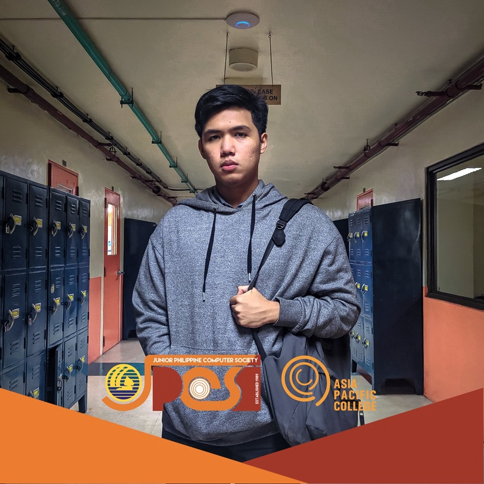
A2: Favorite Application
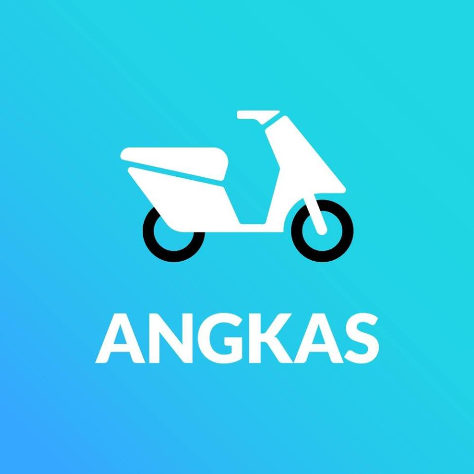Angkas is a ride-hailing application like Grab and Uber. What I like about it is that it beats the traffic in Metro Manila, means to say that I can go to my destination in no time.
As a college student who lives far from my school. This application is a life-saver to me; whenever I need to rush myself to class I'll just pull-out my phone and book from a ride from Angkas. Furthermore, it is cheaper than any ride-hailing applications and they oftenly give more promo codes. It came to the point that I don't have to pay a single cent. Angkas also prioritize safety, they make sure their customers would be safe by providing helmet, hair caps, face masks, safety procedures, and raincoats (when it's raining ofcourse). The riders also were taken into serious training before they've become an official partners of Angkas.
So far, after numerous times of using this application, I haven't experienced any issues. When in fact, the riders were accomodating and friendly as of my experience, they'll talk to you anything under the sun, which really makes me comfortable. Lastly, I've also done multiple deliveries through this application and they are really reliable and trustworthy people. I highly support and recommend Angkas!

A3: 1000 Floor Elevator

If I were to design an elevator interface to a 1000 floor building. It would have 10 buttons (0 to 9), from their the users would have to input their desired floor number, after that the users would have to press the add button.
They also have an option to re-enter their floor by pressing the x button. Furthermore, after pressing the add button their desired floor will be shown at the screen, it will be added in the queue list. Witht this concept the users would be able to reach their floor with no hassle in finding their floor from the traditional elevator button concept.
A4: Need Finding
Problem:
• Miscommunication of Manileños and Foreigners to native Filipinos or vice versa.
• Difficulty to communicate with the native Filipino dialects when travelling in the Philippines.
• Different varieties of Filipino dialects create gaps among Manileños and Foreigners.
Needs:
• To communicate and understand one another
• To share information accurately
• To provide a tool that will bridge language gaps
Solution:
• Creating application that enables Filipinos and Foreigners to translate their language to their desired native Filipino dialect and vice versa.
A5: Initial Prototype - Log In Page
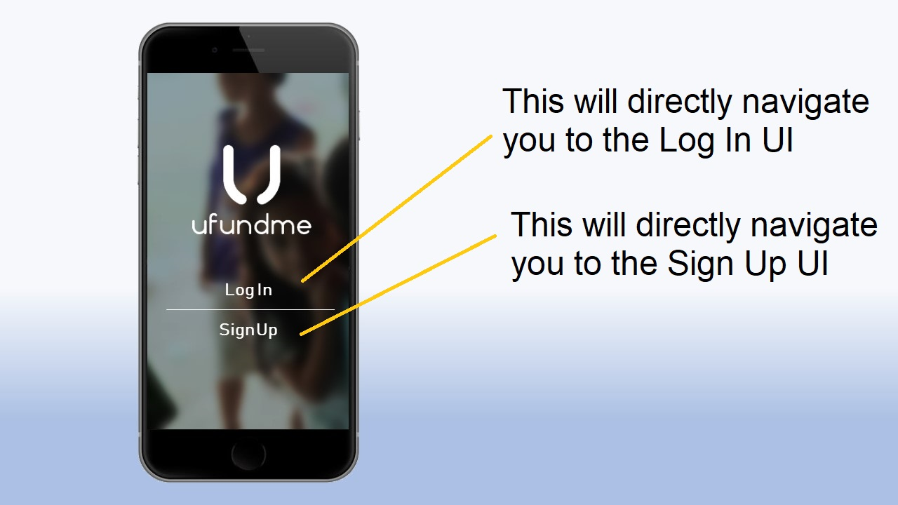 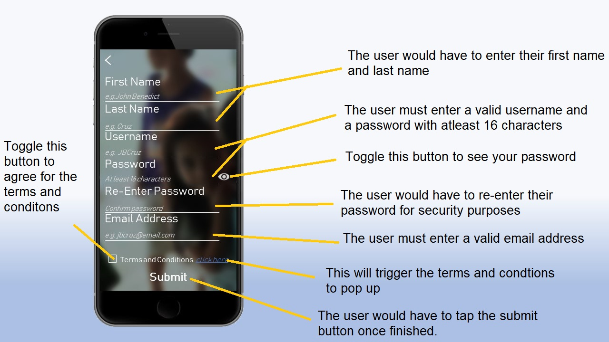 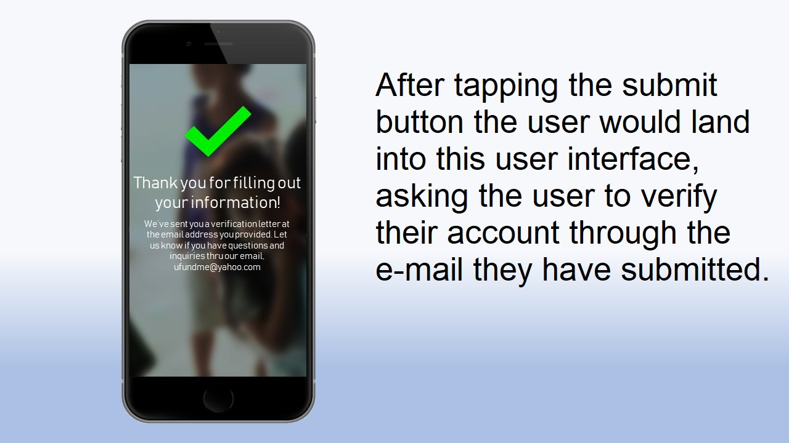
A6: Persona

Ms. Flair perform administrative tasks and oversee administrative staff to ensure that all office tasks run smoothly and in a timely manner. She is responsible with filing, preparing reports, ordering office supplies and performing reception duties.
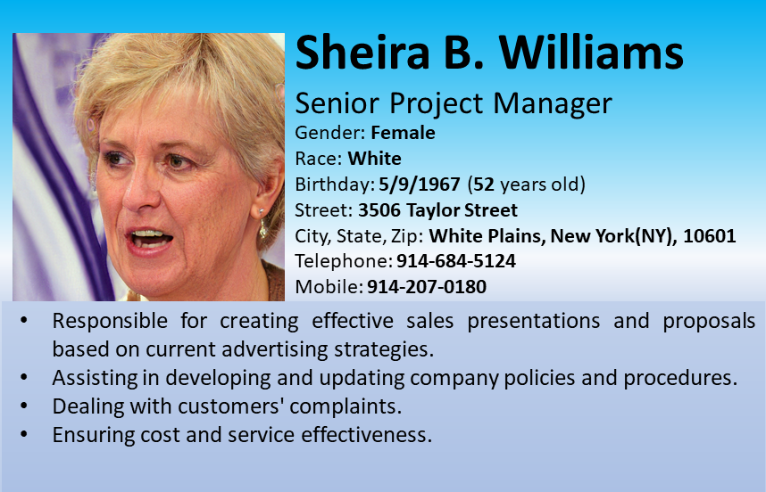Mrs. Williams oversee the successful execution of projects. She does this by creating planning steps, managing the budget and identifying the required resources for the project.
Mr. George report directly to the company manager or team leader. He provides both administrative and technical support for business clients or the internal team. He works in a variety of fields including healthcare, compte science, manufacturing and banking.
A7: Information Design
Before

After
How can we improve this?
• Emphasizing information through its font weight and font size.
• Putting information in an organize manner.
• Add small graphic details for aesthetic purposes
What would be the objective function?
• The objective of this is to invite people for the Delectable after dinner party
Of Robert and Alexandra that will be happening on the 30th of June 2012,
9:30 pm at the Pad, in respect with formality and decency.
A8a: Grid Layout Design
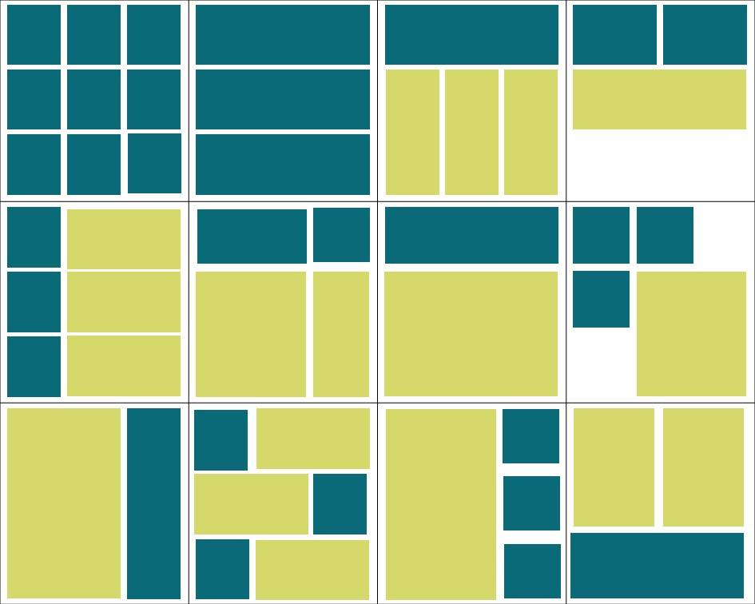A8b: Grid Layout Design
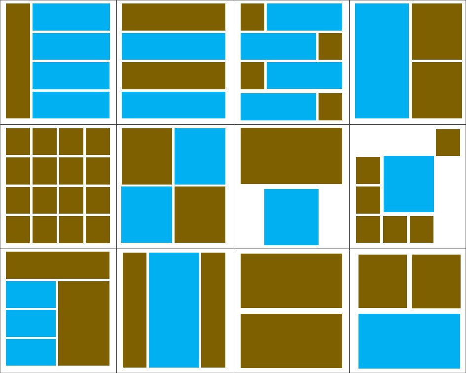A8c: Grid Layout Design
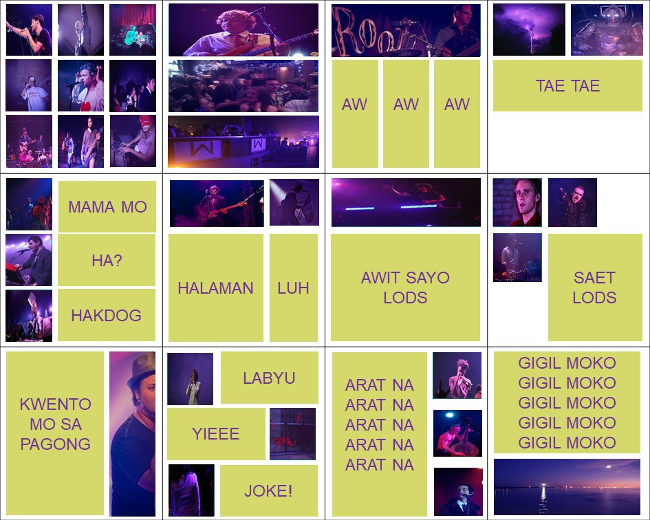A8d: Grid Layout Design
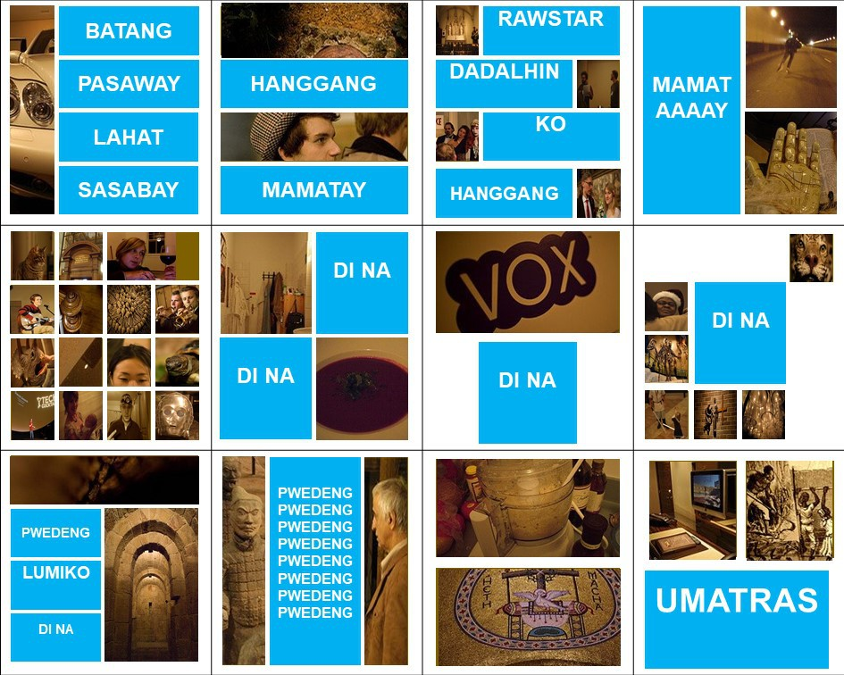
A9: 12-Column Grid Design
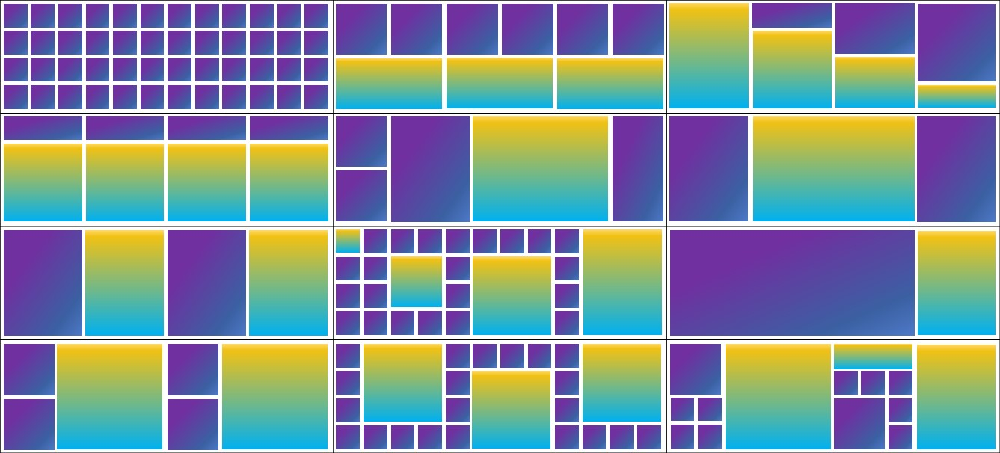
About The Author
I'm a student of Asia Pacific College, currently takingtaking the course of BS in Information Technology specialized in Mobile and Internet.